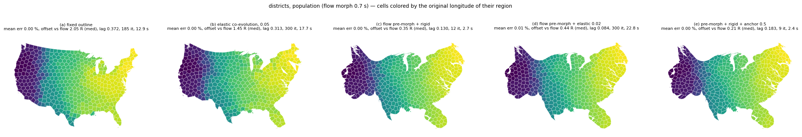
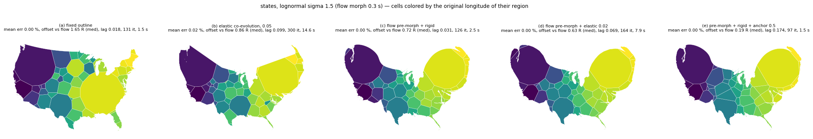
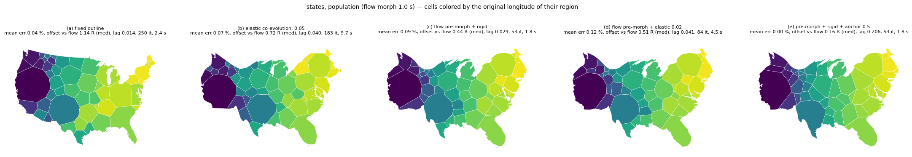
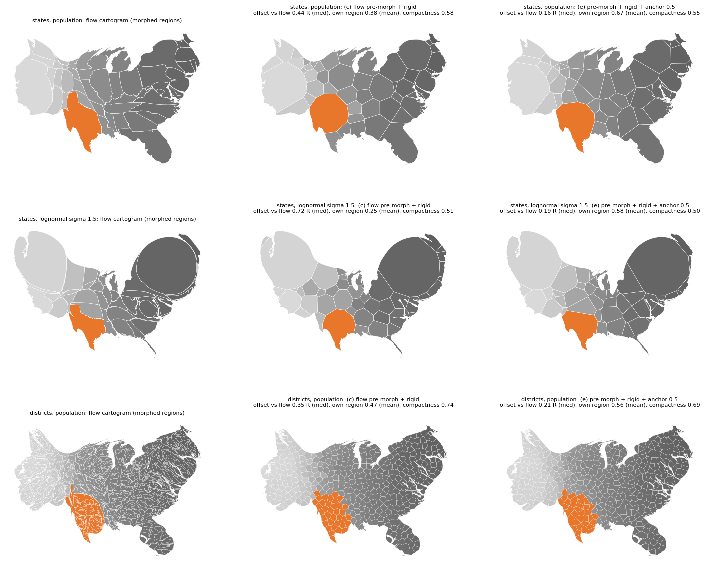
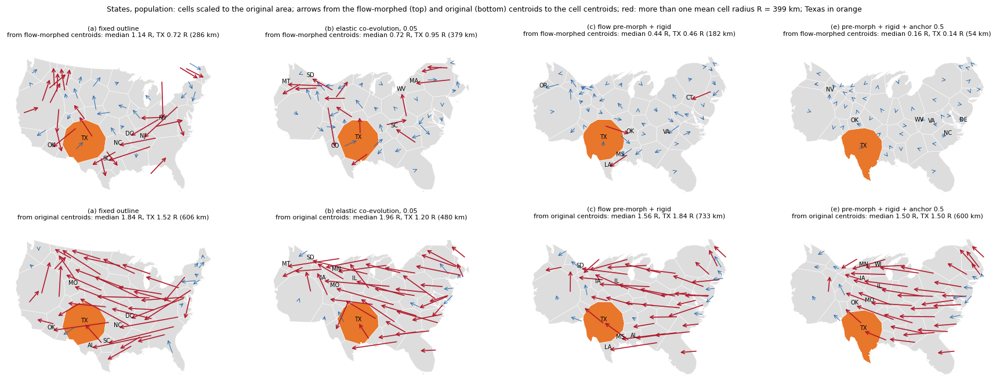
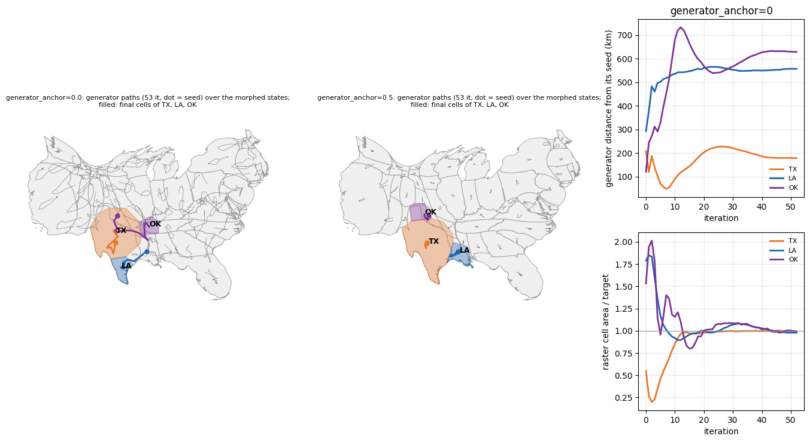

Compares a fixed outline, the elastic boundary co-evolving with the relaxation, and a flow-cartogram pre-morph followed by a rigid (or slightly elastic) Voronoi run, on states and districts. The pre-morph keeps regions closer to their flow-cartogram positions and is 4-7x faster. Plain Lloyd relaxation after the pre-morph still moves Louisiana into south Texas; a generator anchor (new option, 0.5 with the new premorph option) keeps Texas on the Gulf coast and cuts the median offset from the flow cartogram from 0.44 to 0.16 cell radii.
ElasticBoundary(0.05).flow_cartogram.morph_gdf on the same weights, then the weighted Voronoi run on the morphed regions (generators at the morphed centroids, rigid boundary = union of the morphed regions). Morphed rings are repaired with make_valid first: the flow output contained a self-intersection that made the union fail.ElasticBoundary(0.02).RasterBackend(generator_anchor=0.5) (new, see below). This is what create_voronoi_cartogram(..., premorph=True) runs; the new option gives the same metrics on the states (median offset vs flow 0.16 R, TX 0.14 R, 53 iterations).Metrics: offset = cell centroid to original region centroid after scaling the map to the original area, in mean cell radii R (median; R = 399 km for the states, 134 km for the districts); offset vs flow = the same against the flow-morphed centroid; own = share of each morphed region covered by its own cell (mean); Procrustes disparity between original and cell centroids; rank = mean Spearman correlation of x and y; outline vs flow / original = symmetric difference after scaling to equal area, relative to the area; lag = generator-to-centroid distance in own cell radii (median); compact = mean 4 pi A / P^2; split = cells with a second part above 1 %; time = morph plus Voronoi (NUMBA_NUM_THREADS=8). Mean area error is below 0.12 % in every run (max below 1 %).
| dataset | variant | offset (R) | offset vs flow (R) | own | Procrustes | rank | outline vs flow | outline vs orig | lag | compact | split | iterations | time (s) |
|---|---|---|---|---|---|---|---|---|---|---|---|---|---|
| states, population | (a) fixed | 1.84 | 1.14 | - | 0.179 | 0.916 | 0.41 | 0 | 0.014 | 0.62 | 0 | 250 | 2.4 |
| states, population | (b) elastic 0.05 | 1.96 | 0.72 | - | 0.137 | 0.915 | 0.06 | 0.39 | 0.040 | 0.61 | 5 | 183 | 9.7 |
| states, population | (c) pre-morph + rigid | 1.56 | 0.44 | 0.38 | 0.086 | 0.961 | 0 | 0.41 | 0.029 | 0.58 | 3 | 53 | 1.8 (morph 1.0) |
| states, population | (d) pre-morph + elastic 0.02 | 1.72 | 0.51 | 0.35 | 0.092 | 0.955 | 0.03 | 0.40 | 0.042 | 0.62 | 2 | 84 | 4.5 |
| states, population | (e) pre-morph + rigid + anchor 0.5 | 1.50 | 0.16 | 0.67 | 0.070 | 0.974 | 0 | 0.41 | 0.206 | 0.55 | 5 | 53 | 1.8 |
| states, lognormal 1.5 | (a) fixed | 1.49 | 1.65 | - | 0.272 | 0.835 | 0.48 | 0 | 0.018 | 0.58 | 6 | 131 | 1.5 |
| states, lognormal 1.5 | (b) elastic 0.05 | 2.20 | 0.86 | - | 0.279 | 0.835 | 0.16 | 0.45 | 0.099 | 0.57 | 4 | 300 | 14.6 |
| states, lognormal 1.5 | (c) pre-morph + rigid | 1.62 | 0.72 | 0.25 | 0.142 | 0.917 | 0 | 0.48 | 0.031 | 0.51 | 7 | 126 | 2.5 (morph 0.3, stalled) |
| states, lognormal 1.5 | (d) pre-morph + elastic 0.02 | 1.80 | 0.63 | 0.28 | 0.133 | 0.934 | 0.03 | 0.47 | 0.069 | 0.57 | 3 | 164 | 7.9 |
| states, lognormal 1.5 | (e) pre-morph + rigid + anchor 0.5 | 1.81 | 0.19 | 0.58 | 0.087 | 0.966 | 0 | 0.48 | 0.174 | 0.50 | 7 | 97 | 1.5 |
| districts, population | (a) fixed | 6.14 | 2.05 | - | 0.134 | 0.927 | 0.44 | 0 | 0.372 | 0.81 | 15 | 185 | 12.9 |
| districts, population | (b) elastic 0.05 | 5.42 | 1.45 | - | 0.104 | 0.954 | 0.28 | 0.27 | 0.314 | 0.79 | 25 | 300 | 17.7 |
| districts, population | (c) pre-morph + rigid | 5.10 | 0.35 | 0.47 | 0.070 | 0.980 | 0 | 0.44 | 0.130 | 0.74 | 36 | 12 | 2.7 (morph 0.7) |
| districts, population | (d) pre-morph + elastic 0.02 | 5.17 | 0.44 | 0.40 | 0.072 | 0.980 | 0.04 | 0.43 | 0.084 | 0.77 | 30 | 300 | 22.8 |
| districts, population | (e) pre-morph + rigid + anchor 0.5 | 5.12 | 0.21 | 0.56 | 0.069 | 0.981 | 0 | 0.44 | 0.183 | 0.69 | 43 | 9 | 2.4 |
Offsets from the original centroids are large for districts in every variant because the dense urban districts must grow; offset vs flow and Procrustes show how well each variant keeps the arrangement of a density-equalizing map.
Maintainer feedback: even with the pre-morph, Texas moves away from its characteristic location (Gulf coast and Mexican border to the south). In (c) Texas itself moves only moderately (0.46 R, 182 km from its flow-morphed centroid), but its cell no longer reaches the Gulf coast: Louisiana's cell sits on the south-Texas coast and covers 16 % of Texas' morphed region, Mississippi's 8 %, and Texas' own cell covers 73 % of it. The cells of Louisiana, Oklahoma and Mississippi do not overlap their own morphed regions at all.
Per state, offset vs flow / vs original (R and km); own = share of the morphed region covered by its own cell:
| state | (a) fixed | (b) elastic 0.05 | (c) pre-morph + rigid | (e) + anchor 0.5 |
|---|---|---|---|---|
| TX | 0.72 R 286 km / 1.52 R 606 km | 0.95 R 379 km / 1.20 R 480 km | 0.46 R 182 km / 1.84 R 733 km, own 0.73 | 0.14 R 54 km / 1.50 R 600 km, own 0.89 |
| LA | 1.20 R 479 km / 1.69 R 675 km | 1.31 R 521 km / 2.85 R 1136 km | 1.39 R 554 km / 2.93 R 1169 km, own 0.00 | 0.16 R 66 km / 1.66 R 663 km, own 0.74 |
| OK | 1.82 R 728 km / 3.31 R 1321 km | 0.46 R 182 km / 2.22 R 887 km | 1.58 R 630 km / 0.41 R 165 km, own 0.00 | 0.46 R 185 km / 2.45 R 978 km, own 0.41 |
| MS | 1.17 R 467 km / 1.46 R 582 km | 0.84 R 336 km / 1.50 R 600 km | 0.91 R 363 km / 2.73 R 1090 km, own 0.00 | 0.28 R 110 km / 2.14 R 855 km, own 0.59 |
| AR | 1.45 R 580 km / 3.25 R 1297 km | 1.08 R 432 km / 2.53 R 1011 km | 0.87 R 346 km / 1.43 R 569 km, own 0.06 | 0.31 R 122 km / 1.90 R 760 km, own 0.42 |
| FL | 1.42 R 569 km / 0.94 R 374 km | 0.24 R 97 km / 1.07 R 427 km | 0.20 R 79 km / 1.11 R 441 km, own 0.85 | 0.15 R 61 km / 1.15 R 458 km, own 0.89 |
| CA | 1.03 R 413 km / 1.01 R 402 km | 0.46 R 183 km / 0.17 R 68 km | 0.22 R 88 km / 0.45 R 180 km, own 0.83 | 0.07 R 28 km / 0.47 R 189 km, own 0.92 |
| NM | 1.39 R 555 km / 0.95 R 381 km | 0.71 R 284 km / 0.89 R 354 km | 0.17 R 67 km / 1.55 R 619 km, own 0.47 | 0.12 R 49 km / 1.39 R 555 km, own 0.61 |
| AZ | 0.77 R 306 km / 1.11 R 443 km | 0.61 R 243 km / 0.39 R 155 km | 0.54 R 217 km / 0.85 R 340 km, own 0.57 | 0.24 R 95 km / 0.69 R 276 km, own 0.77 |
| NY | 2.25 R 896 km / 1.97 R 785 km | 0.72 R 287 km / 0.97 R 386 km | 0.41 R 162 km / 1.26 R 502 km, own 0.72 | 0.05 R 21 km / 1.48 R 589 km, own 0.84 |
Ten worst states against the flow-morphed centroids (R): (a) NJ 2.71, SC 2.62, NC 2.25, NY 2.25, DC 1.96, OK 1.82, VA 1.72, AL 1.64, CO 1.50, AR 1.45; (b) CO 2.52, MT 2.20, MA 2.18, SC 1.54, SD 1.53, WV 1.52, ID 1.43, VT 1.37, IA 1.37, KY 1.37; (c) OK 1.58, LA 1.39, CT 1.38, OR 0.99, VA 0.95, MS 0.91, AR 0.87, SD 0.81, NV 0.81, DC 0.79; (e) NV 0.49, OK 0.46, NC 0.43, WV 0.41, DE 0.41, VA 0.38, ID 0.35, OR 0.33, GA 0.31, AR 0.31. Against the original centroids every variant is dominated by the cartogram distortion itself (worst 2.2-4.0 R: IA, IL, MO, SD, SC, AL and others), which the Voronoi step cannot undo.
Cause, from the per-iteration trace without the anchor:
RasterBackend(generator_anchor=a) (new, a in [0, 1]) moves each generator toward (1 - a) * cell centroid + a * starting position instead of the cell centroid. A power diagram realizes any target areas for any generator positions, so the areas stay exact; the anchor trades cell compactness for staying near the starting layout. With an ElasticBoundary the starting positions are advected with the boundary flow. a = 0 is the current relaxation; generator_anchor=None (the default) means 0.5 with the new premorph option and 0 otherwise, so existing runs are unchanged (positions and cells hash identically to 02c94c9 on six weighted and unweighted configurations).
Anchor sweep after the pre-morph (rigid boundary; TX = the state, or the union of its districts):
| dataset | anchor | offset vs flow med / max (R) | own mean / min | TX offset (R) / own | lag med / max | compact | split | iterations | time (s) | mean / max area error |
|---|---|---|---|---|---|---|---|---|---|---|
| states, population | 0 | 0.44 / 1.58 | 0.38 / 0.00 | 0.46 / 0.73 | 0.03 / 0.21 | 0.58 | 3 | 53 | 1.0 | 0.09 / 0.66 % |
| states, population | 0.25 | 0.19 / 0.62 | 0.64 / 0.10 | 0.17 / 0.88 | 0.15 / 0.54 | 0.57 | 4 | 43 | 0.7 | 0.08 / 0.99 % |
| states, population | 0.5 | 0.16 / 0.49 | 0.68 / 0.18 | 0.14 / 0.89 | 0.21 / 0.92 | 0.55 | 5 | 53 | 0.8 | 0.00 / 0.00 % |
| states, population | 0.75 | 0.13 / 0.43 | 0.70 / 0.20 | 0.12 / 0.89 | 0.25 / 1.48 | 0.53 | 5 | 67 | 0.8 | 0.11 / 0.99 % |
| states, population | 1 | 0.12 / 0.42 | 0.72 / 0.25 | 0.10 / 0.90 | 0.29 / 1.95 | 0.51 | 6 | 77 | 0.9 | 0.00 / 0.01 % |
| states, lognormal 1.5 | 0 | 0.72 / 3.82 | 0.25 / 0.00 | 0.39 / 0.74 | 0.03 / 0.31 | 0.51 | 7 | 126 | 2.1 | 0.00 / 0.00 % |
| states, lognormal 1.5 | 0.25 | 0.21 / 1.14 | 0.54 / 0.00 | 0.13 / 0.88 | 0.14 / 1.20 | 0.52 | 6 | 127 | 1.3 | 0.04 / 0.87 % |
| states, lognormal 1.5 | 0.5 | 0.19 / 1.11 | 0.58 / 0.00 | 0.12 / 0.90 | 0.17 / 5.53 | 0.50 | 7 | 97 | 1.0 | 0.00 / 0.02 % |
| states, lognormal 1.5 | 1 | 0.13 / 0.77 | 0.62 / 0.00 | 0.09 / 0.91 | 0.24 / 7.14 | 0.46 | 8 | 138 | 1.2 | 0.08 / 0.66 % |
| districts, population | 0 | 0.35 / 1.38 | 0.47 / 0.00 | 0.06 / 0.94 | 0.13 / 0.41 | 0.74 | 36 | 12 | 1.7 | 0.00 / 0.03 % |
| districts, population | 0.25 | 0.24 / 1.24 | 0.54 / 0.09 | 0.04 / 0.95 | 0.12 / 0.52 | 0.72 | 38 | 9 | 1.6 | 0.00 / 0.07 % |
| districts, population | 0.5 | 0.21 / 1.20 | 0.56 / 0.09 | 0.04 / 0.96 | 0.18 / 0.74 | 0.69 | 43 | 9 | 1.5 | 0.00 / 0.13 % |
| districts, population | 1 | 0.17 / 1.19 | 0.58 / 0.10 | 0.03 / 0.97 | 0.29 / 1.24 | 0.65 | 45 | 300 | 18.2 | 0.00 / 0.02 % |
create_voronoi_cartogram(gdf, weights=..., premorph=True) (or a MorphOptions) calls flow_cartogram.morph_gdf with the same weights (no weights: equal values, an equal-area morph), repairs invalid morphed rings with make_valid keeping the polygonal parts, and runs the Voronoi relaxation on the morphed regions: generators at the morphed centroids, the boundary built from the morphed regions (rigid unless the backend has an ElasticBoundary), and with RasterBackend the generator anchor 0.5 unless generator_anchor is set. True uses MorphOptions.preset_balanced() with n_iter=400 and no progress output. The flow result is kept in result.premorph. The algorithm explanation has a new section, and a gallery example (plot_voronoi_premorph.py) shows the flow cartogram next to the Voronoi cartogram.
Use the flow pre-morph with the anchor (the new premorph=True) as the way to get a cartogram-like outline and arrangement, and keep the elastic boundary as an option rather than the default route to that goal. It is the fastest variant, converges in a fraction of the iterations, keeps regions closest to the density-equalizing layout and keeps Texas on the Gulf coast and the Mexican border. The elastic boundary remains useful when the outline should stay close to the original. Caveats: one dataset family, one flow preset, the morphed outline produces more split cells, and the anchor makes cells somewhat less compact.
Regenerate all figures and tables with NUMBA_NUM_THREADS=8 uv run python make_figures.py from a carto-flow checkout of feat/voronoi-premorph (about 4 minutes).

Districts, population.

States, lognormal weights (1399x).

States, population: the five variants, cells colored by the original longitude of their state.

Flow cartogram, (c) and (e) side by side with Texas (or its districts) in orange, for the three datasets.

States, population: arrows from the flow-morphed (top) and original (bottom) centroids to the cell centroids for (a), (b), (c), (e); cells scaled to the original area; red arrows exceed one mean cell radius; Texas in orange.

Rigid run on the morphed states, stepped by hand: generator paths (gray; TX, LA, OK colored; dot = seed) and the final cells of TX, LA and OK without (left) and with the anchor (middle); right: distance of each generator from its seed and raster cell area / target per iteration, without the anchor.